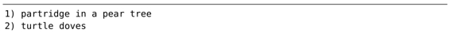

技巧70用迭代求值的方式给列表编号
如果宏在每次执行时都能插入一个可变的数值，这将会很有用处。在本节中，我们将学习一种技术，它会在录制宏的时候使某个数字递增，这样一来，就可以在连续的文本上插入数字1到5。
假设我们要为一些连续的项目进行编号，以下列文本作为演示：
最终，将把它们转换成这个样子：

我们已经学会了几种方法，使得Vim能够执行简单的运算，既可以采用带次数的方式调用<C-a>和<C-x>命令（参见技巧10），也可以利用表达式寄存器（参见技巧16）。为了完成这次任务，我们将使用表达式寄存器并结合一点Vim脚本。
基本的Vim脚本
我们先把即将用到的几个命令行脚本过一遍。通过使用let关键字，我们可以创建一个名为i的变量，并将其值赋为0，也可以用:echo命令查看变量的当前值：
➾:let i=0
➾:echo i
《 0
以下语句可用于累加i的值：
➾:let i += 1
➾:echo i
《1
如果只是想显示一个变量的值，:echo命令完全可以胜任，但实际上，我们是想在文档中插入这个值，因此要使用表达式寄存器。在技巧16中，我们已经看到可以用表达式寄存器进行简单的求和运算，并将结果插入至文档。在这里，我们只需在插入模式下运行<C-r>=i<CR>，即可插入变量i的值。
录制宏
现在我们归纳一下操作的步骤：
在开始录制宏之前，先将变量i的初值赋为1。在宏的录制过程中，利用表达式寄存器插入i的值，而在停止宏的录制之前，再触发该变量进行累加，现在应该是2了。
执行宏
正如表11-4所展示的那样，我们可以在余下的文本行上回放这个宏。
:normal @a命令将指示Vim在高亮选中的每一行上执行这个宏（参见以并行方式执行宏）。i的初始值是2，但它在每次宏执行完后都会递增。最终，每行都以连续的数字开头了。
表11-4 —— 在其余的文本行上执行宏
我们也可以通过复制、粘贴以及<C-a>命令完成同样的工作。作为练习，你不妨自己试一试。